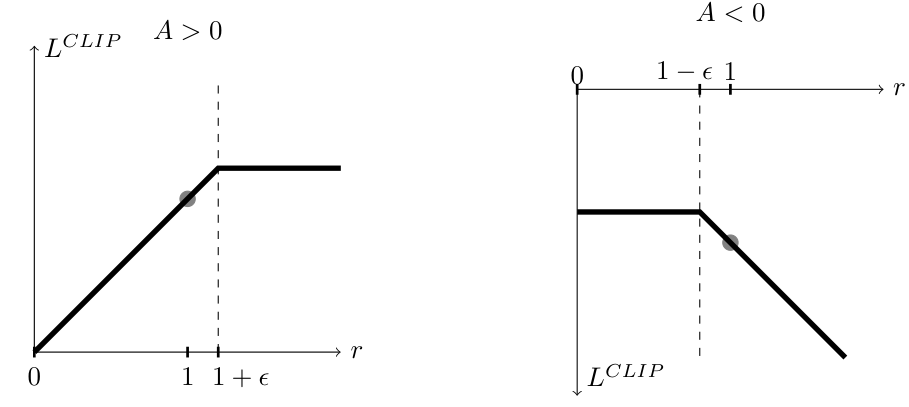
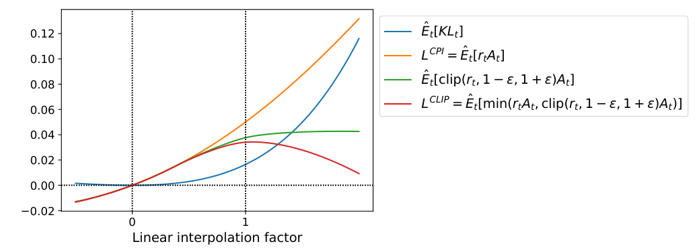
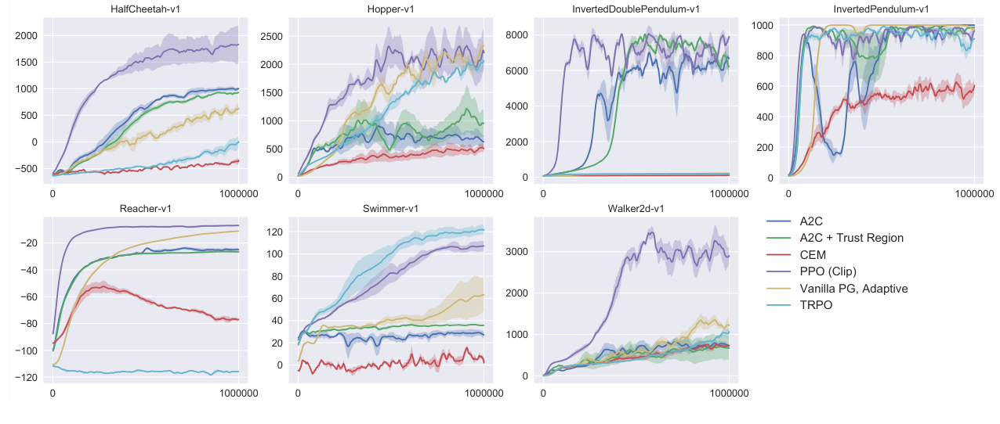

同一批数据多学几遍，但每一步不许迈太大
Schulman 等人 2017 年在 OpenAI 写的《Proximal Policy Optimization Algorithms》，就是 PPO。强化学习里，训练一个策略要先让它去玩、采数据，而采数据很贵。普通的策略梯度一批数据只能走一步，多走几步又会把策略学崩。PPO 的做法是：把新旧策略对同一个动作的概率之比限制在 [1−ε, 1+ε] 附近，比值超出去，就不再给奖励。这样同一批数据可以放心地反复训练很多轮，只用普通的一阶梯度下降，就拿到接近 TRPO 的稳定性。后来 InstructGPT 训练语言模型用的优化器，就是它。
- 正文只走一条线：一批数据只能走一步，多走又会崩 → 用概率比量出策略变了多少 → 超出区间就不再奖励 → 同一批数据学很多轮 → 每个结论对应哪个实验。只读每节的标题和每段第一句，也能串起来。
- 公式、符号表、策略梯度和优势函数的讲法、裁剪的完整算例、TRPO 和 KL 惩罚变体、GAE、超参数、完整结果表、当时的背景，都在页尾的附录里，默认折叠，标明对应原文第几节。
- 小数字例子都验算过：为讲解设定的标「示意」，按原文规格估算的标「推算」。
- 强化学习的基本概念（智能体、状态、动作、奖励）在 015 Human Preferences 讲过，本篇用的 Adam 在 005 Adam；PPO 怎么用到语言模型上，见 018 InstructGPT。
1要解决的问题
先说策略梯度是什么。让当前策略去玩一批，事后看每个动作比平均水平好多少（这叫优势，记作 Â）；好的动作，把它的概率调高，差的调低，调多少看好多少。这个办法很通用，但有一个毛病：每批数据只能走一步。采一批数据很贵，机器人要真的跑一遍，人类标注更贵，走一步就扔掉，太浪费。精确写法见附录 A 式 1、式 2，讲法见附录 B。
同一批数据多走几步，策略会崩
最直觉的补救是在同一批数据上多走几步。原文说这样做缺乏依据，实践中往往带来过大的策略更新。原因有三层。第一，优势 Â 只对采数据的那个旧策略有效，策略走远之后，它就不准了。第二，一次采样的运气会被反复放大：下图里一个样本被推了四次。第三，强化学习里数据是策略自己产生的，策略变坏，采到的数据更差，学到的更差，没有回头路。
如果干脆把「概率比乘优势」直接最大化（原文式 6，下一节讲），也会这样：优势为正的样本，目标随比值线性增长，没有上限，优化器会一直把比值往上推。原文 Table 1 里，不加任何限制的这一行平均归一化得分是 −0.39，比随机策略还差（见第 5 节）。
TRPO 管得住，但太复杂
此前的解法是 TRPO：要求新旧策略的平均 KL 散度不超过 δ，在这个「信赖域」里最大化目标。它有理论支撑，效果也好。代价是要把目标做线性近似、把约束做二次近似，再用共轭梯度解方程，代码量大，不能直接套 Adam 这类一阶优化器，原文还说它不兼容 dropout 和策略与价值函数共享参数的网络。细节见附录 D。
所以要的是：只用一阶优化，实现只比普通策略梯度多几行，同时有「别走太远」的稳定性。
2第一步：用概率比量出策略变了多少
要限制「走多远」，先要一个便宜的读数。办法是看新策略给同一个动作的概率，是旧策略给的多少倍：r = 新概率 ÷ 旧概率。r = 1 表示没变，r = 1.5 表示新策略更爱选它了，涨了一半，r = 0.5 表示砍掉了一半。旧概率在采样时顺手存下来就行，不用额外计算。
为什么用比值就能在旧数据上评价新策略？数据是旧策略采的，想知道新策略的期望，给每个样本乘上 r 来纠偏就行，这叫重要性采样。于是目标写成 LCPI = 各样本 r × Â 的平均（原文式 6）。在 r = 1 处，它的梯度恰好等于策略梯度；离开之后，纠偏只在新旧策略接近时才可靠，比值太大时，少数样本的权重会压倒一切。所以必须把 r 管在 1 附近。精确写法见附录 A 式 6，小数字例子见附录 B。
这一步对着上一节的毛病：多走几步会崩，是因为没有一个读数告诉优化器「你已经走远了」。r 就是这个读数。
3第二步：裁剪，变得太多就不再奖励
做法是把 r 夹在 [1−ε, 1+ε] 里，原文建议 ε = 0.2，也就是 [0.8, 1.2]。目标取「原来的 r × Â」和「夹过的 r × Â」两者中较小的那个（原文式 7）。结果是：
- 好动作（Â > 0）：概率涨到旧的 1.2 倍为止，再涨目标也不增加，梯度为 0，优化器没有动力继续推。
- 坏动作（Â < 0）：概率降到旧的 0.8 倍为止，再降也不再奖励。

为什么要取较小者，而不只是把 r 夹住？看一个例子：好动作被策略不小心压低了一半（r = 0.5）。只夹不取较小者，夹过的值是 1.6，比原来的 1.0 还高，r < 0.8 的区域梯度为 0，这个错误就没人管了。取较小者之后，选的是 1.0，梯度保留，会把 r 拉回来。原文的概括是：目标变好的方向，越界就不计功劳；目标变差的方向，一分不少地计入。
作者给的一个直观证据
原文 Figure 2 取的是 Hopper-v1 第一次策略更新：从旧参数出发，沿着「旧参数到 PPO 一次迭代后的新参数」这条线做线性插值，把几个目标和 KL 都画出来。

这里有两点我补充的，原文没有证明：第一，裁剪只是让越界的样本自己没有梯度，其他样本的梯度仍会带着共享参数一起动，所以 r 并不保证留在 [0.8, 1.2] 里。「近端」是启发式，不是硬约束，原文也没有单调改进的理论保证，它靠实验说明管用。第二，为什么逐样本地管 r，就能近似管住整体的 KL？我的直觉是：KL 本质上是各动作概率差的累加，每个样本的 r 都不能偏太远，整体分布也就变不了太多。这是我的推测，原文没有给出。精确写法见附录 A 式 7，完整算例见附录 C。
这一步对着两个毛病：一批数据多走几步会崩，现在到了边界就没有梯度；TRPO 太复杂，现在只是换了一个目标函数。
4第三步：同一批数据学很多轮
有了裁剪，同一批数据就可以反复学了。原文 Algorithm 1：N 个并行的 actor，各用旧策略在环境里跑 T 步，算好每一步的优势估计；再对这 N·T 个样本构造裁剪目标，分成小批，用 SGD 或 Adam（005）走 K 个 epoch；最后把旧策略更新成新策略，回到第一步。和普通策略梯度相比，代码只改两处：损失换成裁剪目标，同一批数据重复 K 轮。
完整的训练目标还要加两项（策略和价值网络共享参数时）：价值函数的平方误差，和鼓励探索的熵奖励（原文式 9）。优势用截断版的广义优势估计 GAE 算（原文式 10 到 12）。这些是已有的做法，不是本文的新东西，写在附录 A 和附录 F。原文还给了一个对照用的变体：自适应调整 KL 惩罚系数，附录 E 有讲；作者自己说它的效果不如裁剪，放进来是因为它是重要的基线。
这一步对着的毛病：一批数据只走一步，太浪费。现在每批走几十到几百步，用的还是普通的一阶优化器。精确写法见附录 A 式 9。
5证据：稳不稳，省不省
不加限制就崩，加了任何一种限制都好得多
原文 6.1 用 7 个 MuJoCo 机器人任务（HalfCheetah、Hopper、InvertedDoublePendulum、InvertedPendulum、Reacher、Swimmer、Walker2d），每个训练 100 万步。每种算法和超参数的组合在每个环境跑 3 个随机种子，共 21 次运行。每次用最后 100 局的平均总奖励打分，再归一化：随机策略记 0，该环境里所有结果中最好的记 1。所以它是相对分，只能在这张表里横向比较。
读法：第一，不限制的一行是 −0.39，其余全是正数。原文说，原因是 HalfCheetah 上它得了很差的分，比最初的随机策略还差。这就是第 1 节的灾难，任何一种限制都远好于没有限制。第二，裁剪里 ε = 0.2 最好（0.82），ε = 0.1 是 0.76，ε = 0.3 是 0.70。第三，KL 惩罚全落在 0.62 到 0.74，都低于最好的裁剪，作者的结论是裁剪版表现最好。
这里有几点要注意（我补充的）：并不是处处碾压，ε = 0.3 的裁剪（0.70）低于自适应 KL（d = 0.01，0.74）；21 次运行没有给方差或误差条，0.02 到 0.05 的差距，我认为不宜过度解读。
和其他算法比：连续控制
原文 6.2 把 PPO（裁剪，ε = 0.2）和 TRPO、CEM（不用梯度的随机搜索）、带自适应步长的普通策略梯度、A2C、带信赖域的 A2C 放在同样的 7 个环境、100 万步上比。原文只给学习曲线，没有表格，文字结论是 PPO 在几乎所有连续控制环境里更好。

和 ACER、A2C 比：Atari
原文 6.4 在 49 个 Atari 游戏上比 PPO、A2C 和 ACER（带经验回放的 off-policy 方法），三者用同样的策略网络。每个游戏取 3 次试验的平均，谁高谁「赢」一场，按两种打分各数一遍：一种是全程的平均每局奖励，偏爱学得快；一种是最后 100 局的平均奖励，偏爱最终水平。
读法：PPO 明显强过 A2C（A2C 一批数据只走一步，符合预期）。按「学得快」，PPO 赢最多（30 场），说明样本效率高；按「最终成绩」，ACER 赢得更多（28 对 19）。所以不是全面胜出，原文引言写的是「和 ACER 类似，但简单得多」。我猜原因是：ACER 是 off-policy，能榨更多旧数据，最终水平更高；PPO 是 on-policy，靠每批多学几轮换来速度。这个解释原文没有分析。
另外，原文 6.3 还有一个展示性的实验：用 PPO 训练 3D 人形机器人跑、转向追目标、被方块砸后爬起来（Roboschool 的三个任务）。它没有对比基线，作用是说明 PPO 能处理高维连续控制。
原文的结论：PPO 有信赖域方法的稳定和可靠，但实现简单得多，只需在普通策略梯度上改几行，适用于更一般的设置（比如策略和价值共享网络），整体表现更好。
6局限和后来
- 没有理论保证。裁剪是启发式，r 可以越界，ε 是调出来的；原文没有收敛或单调改进的证明（我补充的）。
- 基准较窄。连续控制用的是 100 万步的便宜基准，7 个任务、3 个种子，差距小的比较缺少显著性说明；Atari 上最终成绩不及 ACER（原文自己写了）。
- 奖励现成。实验都在模拟器里，奖励由环境给；奖励从哪来，是 015 的事。
- 后来：018 InstructGPT 用 PPO 优化语言模型，奖励来自人类偏好训练的奖励模型（见 015），再加上对初始模型的 KL 惩罚。这是后世的用法，不在本文里。更多见附录 J。
+附录 · 想深入再看
下面每一块都是可跳过的，默认折叠，标明对应原文第几节。
A · 公式与符号表（原文第 2 到 5 节）
下面的式号是原文的式号。
| 符号 | 白话 |
|---|---|
| πθ(a|s) | 策略：在状态 s 下选动作 a 的概率 |
| Êt[…] | 在这一批采到的时间步上取平均（hat 表示用样本估计） |
| Ât | 优势估计：这个动作比平均水平好多少 |
| rt(θ) | 概率比：新策略给这个动作的概率 ÷ 旧策略给的 |
| ε | 裁剪区间的半宽，建议 0.2 |
| β，dtarg | KL 惩罚系数；每次更新想要的目标 KL |
| c1，c2 | 价值损失、熵奖励的系数 |
| γ，λ | 折扣因子；GAE 的插值参数 |
| N，T，K，M | actor 数；每个 actor 跑的步数；epoch 数；小批大小 |
B · 读懂主线用到的概念（原文第 2 节；讲法和算例是我补充的）
策略：输入状态，输出每个动作的概率（离散动作）或动作分布的均值和方差（连续动作）。放到语言模型里，状态是已有的文字，动作是下一个 token，策略就是 softmax 输出的下一词概率分布。所以 PPO 里的 πθ(at|st)，在语言模型里就是 P(下一个 token | 前文)。
策略梯度的直觉：奖励来自环境，是黑盒，没法对它求导。但策略的输出是概率，可以直接调：某个动作之后结果好，把概率调高；差，调低；调多少，看比平均好多少。为什么用 log 概率：样本是按策略自己的概率抽出来的，概率大的被抽到的次数多，直接用 ∇π 会把高概率动作多推一遍；∇π = π·∇log π，改用 ∇log π 正好抵消（标准推导的直觉，原文没有展开）。
示意：一个状态下有 3 个动作，策略 π = (0.7, 0.2, 0.1)，采到动作 2，优势 +1。对 softmax 的 logits，∇log π 是 (−0.7, +0.8, −0.1)；学习率 0.5，logits 变化是 (−0.35, +0.40, −0.05)，新概率约 (0.556, 0.336, 0.107)。动作 2 从 0.2 涨到 0.336。若优势是 −1，方向相反。
优势函数：A(s,a) = Q(s,a) − V(s)。V(s) 是在状态 s 按当前策略玩下去平均能拿多少，Q(s,a) 是先做 a 再按当前策略玩下去平均能拿多少。为什么不直接用这局总奖励：总奖励里大部分是本来就容易拿的分。示意：某游戏每局普遍 100 分，三次采样 100、102、98，用总奖励当权重，三个动作的概率全被推高，方向信息被「100」淹没；减去 V = 100 后，变成 0、+2、−2，信号清楚得多。减基线不改变期望梯度（因为 Σa π∇log π = ∇Σπ = ∇1 = 0，标准结论，不是本文内容），只降低方差。V(s) 再用一个网络估计，叫 critic，策略网络叫 actor。
重要性采样：样本来自旧策略，想算新策略下的期望，给每个样本乘新旧概率之比。示意：两个动作，优势 +1 和 −1，旧策略 (0.5, 0.5)，新策略 (0.7, 0.3)。新策略下的期望优势直接算：0.7×1 + 0.3×(−1) = 0.4。只用旧策略的样本：0.5×(1.4×1) + 0.5×(0.6×(−1)) = 0.7 − 0.3 = 0.4，一致。
LCPI（原文式 6，来自 Kakade 和 Langford 2002 的 conservative policy iteration，所以叫 CPI）：在 θ = θold 处 r = 1，∇r = ∇log π，所以这里的梯度正好等于策略梯度，原文说「一阶相同」。它是个「代理」：真正想要的是真实性能，没法直接算，就换一个在旧策略附近与它一阶一致、又能在样本上算出来的替身。
KL 散度：KL[p, q] = Σ p(a)·log(p(a)/q(a))，不小于 0，相同时为 0，不对称。示意：旧策略 (0.5, 0.5)，新策略 (0.6, 0.4) 时 KL = 0.0204；新策略 (0.7, 0.3) 时 KL = 0.0872。偏移翻倍，KL 约翻 4 倍，所以 0.02 级别已经是明显的一次更新，原文 Figure 2 里 PPO 一次迭代后的 KL 就是约 0.02。r 是单个动作的概率之比，KL 是整个分布的平均差距，裁剪 r 是逐样本地管，KL 约束是整体地管。
熵与探索：策略偏爱某个动作，就会越来越多地采到它，越来越有「证据」说它好，过早收敛到次优。熵 S = −Σπ log π 衡量分布有多散，示意：(0.5, 0.5) 是 0.693，(0.9, 0.1) 是 0.325，(0.99, 0.01) 是 0.056。在目标里加熵奖励，鼓励保留随机性。这是旧做法（原文引用 Williams 1992、Mnih 2016）。
on-policy 与样本效率：on-policy 要求数据由当前（或几乎当前）的策略产生，策略一变，旧数据就过期，策略梯度天然如此。off-policy（DQN、ACER 的经验回放）可以反复用旧数据，更省，但要处理修正偏差。样本效率是达到同样性能要和环境交互多少步。PPO 想要的是保持 on-policy 的简单，每批数据多榨几个 epoch。
本文的竞争者：DQN（学动作价值 Q，选 Q 最大的动作，只适合离散动作）；A3C / A2C（多个 actor 并行采样，一批一步，A2C 是同步版）；ACER（带经验回放的 actor-critic，off-policy，数据效率高但实现复杂）；CEM（交叉熵方法，不用梯度的随机搜索）。
C · 裁剪的完整算例（原文第 3 节；算例是我补充的）
情形一：Â = +2，旧概率 0.10。
| 新概率 | r | 未裁剪 r·Â | clip(r)·Â | 取较小者 | 梯度 |
|---|---|---|---|---|---|
| 0.11 | 1.1 | 2.2 | 2.2 | 2.2 | 有，继续提高 r |
| 0.12 | 1.2 | 2.4 | 2.4 | 2.4 | 有，刚到边界 |
| 0.15 | 1.5 | 3.0 | 2.4 | 2.4 | 0（被夹住） |
| 0.05 | 0.5 | 1.0 | 1.6 | 1.0 | 有，把 r 往回拉 |
情形二：Â = −2，旧概率 0.10。
| 新概率 | r | 未裁剪 r·Â | clip(r)·Â | 取较小者 | 梯度 |
|---|---|---|---|---|---|
| 0.09 | 0.9 | −1.8 | −1.8 | −1.8 | 有，继续降低 r |
| 0.08 | 0.8 | −1.6 | −1.6 | −1.6 | 有，刚到边界 |
| 0.05 | 0.5 | −1.0 | −1.6 | −1.6 | 0（被夹住） |
| 0.15 | 1.5 | −3.0 | −2.4 | −3.0 | 有，把 r 压回去 |
| 优势 | 哪里有梯度 | 含义 |
|---|---|---|
| Â > 0 | r < 1+ε 有；r > 1+ε 为 0 | 好动作提高到 1.2 倍为止，不再奖励 |
| Â < 0 | r > 1−ε 有；r < 1−ε 为 0 | 坏动作降到 0.8 倍为止，不再奖励 |
原文还说，它试过在 log 空间里裁剪，表现没有更好（6.1）。另外，原文只证明了 LCLIP 是 LCPI 的下界（悲观估计），引言里说它是「策略性能的下界」，措辞比证明的宽松一点（我补充的）。
D · TRPO 是怎么做的（原文 2.2 节）
TRPO 的问题是：在新旧策略平均 KL 不超过 δ 的「信赖域」里，最大化代理目标（式 3、式 4）。原文：把目标做线性近似、约束做二次近似后，可以用共轭梯度算法高效地近似求解。
拆开讲（我补充的）：线性目标加二次约束，解的方向是 F⁻¹g，其中 g 是梯度，F 是 KL 的二阶导数矩阵，要解线性方程组 F x = g。参数有百万级时 F 是百万乘百万的矩阵，存不下，更求不了逆。共轭梯度只靠「矩阵乘向量」就能解这个方程，不用显式构造 F。TRPO 原文在求出方向后还有一次线搜索，保证 KL 确实没超，这一点不在本文里。
为什么不兼容 dropout 和共享参数（原文第 1 节只写了「不兼容」，下面是我的展开）：约束要比较同一输入下新旧策略的输出，dropout 每次前向随机丢神经元，两次输出的差别里混进噪声，KL 约束就失去意义；策略和价值共享参数时，一组参数同时服务两个损失，只针对策略 KL 的约束没法自然处理价值损失。PPO 的目标是一个普通标量损失，想加什么项加什么项。
为什么不干脆用固定的 KL 惩罚：理论上 TRPO 本来就该用惩罚（式 5）。但原文说，很难找到一个在不同问题上，甚至在同一个问题的不同训练阶段，都好用的 β，所以 TRPO 才用约束；固定 β 不行，实验表明还需要额外的修改。这也是 PPO 要找另一条路的原因。
| 普通策略梯度 | TRPO | PPO | |
|---|---|---|---|
| 每批数据更新 | 1 步 | 1 次（带 KL 约束的大步） | K 个 epoch × 多个小批 |
| 怎么防走太远 | 无（只靠一步小） | 硬约束 KL ≤ δ | 目标自带裁剪（或 KL 惩罚） |
| 优化阶数 | 一阶 | 二阶近似 + 共轭梯度 | 一阶（SGD / Adam） |
| 兼容 dropout、共享参数 | 是 | 否（原文第 1 节） | 是 |
| 理论保证 | 无 | 有（近似，TRPO 论文） | 无（靠实验） |
E · 自适应 KL 惩罚变体（原文第 4 节）
不裁剪，退回 TRPO 的惩罚版，但让 β 自己调（式 8）。每次策略更新：先用若干 epoch 的小批 SGD 优化 LKLPEN，再算更新后的实际平均 KL，记为 d；如果 d < dtarg / 1.5，β 减半；如果 d > dtarg × 1.5，β 翻倍；否则不变。新 β 用于下一次更新。
示意：dtarg = 0.01，阈值是 0.0067 和 0.015。某次 d = 0.004，惩罚过重，β 从 1 变成 0.5；某次 d = 0.03，惩罚过轻，β 从 1 变成 2；d = 0.012 在区间内，β 不变。
为什么比固定 β 好（我补充的）：最优 β 随任务、甚至随训练阶段而变；自适应把一个难选的数，换成一个有物理意义的数，即每步策略大概变多少。原文说 1.5 和 2 是启发式选的，算法对它们不敏感；β 的初值也不重要；偶尔会出现 KL 远偏离 dtarg 的更新，但很少，β 会很快调整。
结果：原文明说 KL 惩罚的表现不如裁剪，放进来是因为它是重要的基线（数字见附录 H Table 1）。Roboschool 的 Adam 步长也是按 KL 目标调的（原文 Table 4 标题），具体规则原文没写，是否就是这条规则不能确定；Heess 等 2017 同期用的也是 PPO 的自适应 KL 版本（原文 6.3）。
F · GAE 与 actor-critic 采样（原文第 5 节）
原文只用了两行（式 10 到 12），引用了 Schulman 等 2015 的 GAE，没有展开。下面的解释是我补的。
怎么从采到的数据估计 Â：两个极端。纯蒙特卡洛：用实际拿到的后续奖励 rt + γrt+1 + … 减去 V(st)，无偏，但把未来很多步的随机性都包进来，方差大。只看一步的 TD 误差 δt = rt + γV(st+1) − V(st)：方差小，但依赖 V 估得准不准，V 不准就有偏。GAE 用参数 λ 在两者间插值：Ât = δt + (γλ)δt+1 + (γλ)²δt+2 + …。λ = 0 只看一步；λ = 1 恰好是蒙特卡洛回报减 V(st)。本文三组实验都取 γ = 0.99，λ = 0.95。
示意（我算的）：三步一局，到第 3 步终止。γ = 0.99，奖励 (0, 0, 10)，价值估计 V(s₀) = 1，V(s₁) = 2，V(s₂) = 3，终止后为 0。δ₀ = 0 + 0.99×2 − 1 = 0.98，δ₁ = 0 + 0.99×3 − 2 = 0.97，δ₂ = 10 + 0 − 3 = 7.0。λ = 0：Â₀ = 0.98。λ = 0.95：γλ = 0.9405，Â₀ = 0.98 + 0.9405×0.97 + 0.9405²×7.0 ≈ 8.084。λ = 1：Â₀ = 0.98 + 0.99×0.97 + 0.99²×7.0 = 8.801，等于直接算 −1 + 0.99²×10 = 8.801。最后那个大奖励，λ = 0 时完全传不回 s₀，λ 越大传得越多，也把更多随机性带进来。
截断：每个 actor 只跑 T 步（T 远小于一整局），所以估计只能用到第 T 步为止。式 10 是 A3C / A2C 的做法（Mnih 2016），λ = 1 时式 11 退化为它。
价值损失与熵：式 9 里，LVF 让价值头预测的 V 接近目标 Vtarg。示意：Vθ = 3.0，目标 5.0，LVF = (3−5)² = 4，c1 = 1 时贡献 −4，推着价值头往 5 调；策略 (0.5, 0.5) 的熵 0.693，c2 = 0.01 时贡献 +0.0069，只是轻轻推一把。Atari 取 c1 = 1，c2 = 0.01；MuJoCo 的对比实验不共享参数，c1 无关，也不加熵奖励（6.1）。Vtarg 具体怎么定，原文没写，常见做法是用采样回报（本文之外，待核实）。
G · 训练设置和超参数（原文 6.1 节、Appendix A，Table 3、4、5）
| 超参数 | MuJoCo（Table 3） | Roboschool（Table 4） | Atari（Table 5） |
|---|---|---|---|
| 时间窗 T | 2048 | 512 | 128 |
| Adam 步长 | 3×10−4 | 按 KL 目标调整 | 2.5×10−4 × α |
| epoch 数 K | 10 | 15 | 3 |
| 小批大小 M | 64 | 4096 | 32 × 8 |
| γ / λ | 0.99 / 0.95 | 0.99 / 0.95 | 0.99 / 0.95 |
| actor 数 N | 未给出 | 32（locomotion），128（flagrun） | 8 |
| 裁剪 ε | 6.1 里扫 0.1 / 0.2 / 0.3；6.2 用 0.2 | 表里未列 | 0.1 × α |
| c1 / c2 | 无关 / 不加 | 表里未列 | 1 / 0.01 |
Atari 里的 α 从 1 线性降到 0，所以 ε 和学习率都随训练线性减小。Roboschool 表里还有「动作分布的对数标准差：LinearAnneal(−0.7, −1.6)」。MuJoCo 的策略网络是两层隐藏层、各 64 个单元、tanh 激活的 MLP，输出高斯分布的均值，标准差可变（是否与状态无关原文没写）；策略和价值不共享参数。Atari 用 Mnih 2016 的网络结构。
H · 完整结果表（原文 6.1、6.4 节，Table 1、2、6）
Table 1：数字见图 8，这里不重复。归一化得分只能在表内横向比较，不能理解成「达到最优的百分之几」。
Table 2：49 个游戏各赢多少场。
| 打分方式 | A2C | ACER | PPO | 平局 |
|---|---|---|---|---|
| （1）全程平均每局奖励 | 1 | 18 | 30 | 0 |
| （2）最后 100 局平均奖励 | 1 | 28 | 19 | 1 |
Table 6 里的几个单点（附录 B，40M 帧即 1000 万步之后最后 100 局的均分；原文标题写「PPO and A2C」，表里实际有三列，含 ACER）：
| 游戏 | A2C | ACER | PPO |
|---|---|---|---|
| Kangaroo | 45.3 | 50.0 | 9928.7 |
| Zaxxon | 16.3 | 29.0 | 5008.7 |
| Enduro | 0.0 | 0.0 | 758.3 |
| Freeway | 0.0 | 0.0 | 32.5 |
| Gopher | 1500.9 | 37802.3 | 2932.9 |
| UpNDown | 17369.8 | 145051.4 | 95445.0 |
| VideoPinball | 19735.9 | 156225.6 | 37389.0 |
| DemonAttack | 6639.1 | 38808.3 | 11378.4 |
| Pong | 19.7 | 20.7 | 20.7 |
前四个游戏上，A2C 和 ACER 近乎没学会，PPO 学会了；后四个游戏上，ACER 大幅领先。这几行的数字我逐格对过原文文本。
展示实验（6.3，Figure 4、5）：Roboschool 上的三个人形任务：向前跑（Humanoid）；目标每 200 步或到达时随机变（Flagrun）；被方块砸后要爬起来（FlagrunHarder）。学习曲线横轴分别到 5000 万、1 亿、1 亿步（我读自解读，原图未逐一核对）。它没有对比基线，是展示性的。
I · 当时的背景（原文第 1、6 节）
深度强化学习的三条路线并存（2013 到 2017）：DQN 在 Atari 上达到超人水平，但只适合离散动作；策略梯度（A3C，2016）；信赖域方法（TRPO，2015）。三者各有缺点，原文第 1 节开头就是在盘点这个局面。
连续控制基准：OpenAI Gym（2016）加 MuJoCo 物理引擎（Todorov 2012）；Duan 等 2016 把常用算法放在统一基准上比较。这些让「不同算法放在一起比」成为可能，PPO 的实验设计就建立在它们之上。
并行采样：A3C / A2C 的并行 actor 风格已经流行，PPO 沿用 N 个 actor × T 步，Roboschool 用了 32 到 128 个 actor，Atari 用 8 个。
同年相关工作：Heess 等（DeepMind，2017）用 PPO 的自适应 KL 版本训练复杂环境里的运动行为（原文 6.3）；015 在同一年用人类偏好训练奖励模型。
作者背景（我的观察，不是原文）：Schulman 是 TRPO 的作者，Radford 是 GPT 系列（006、007）的作者之一，这个人员重叠是 PPO 后来用到语言模型上的一个背景因素。本文发表时（2017 年 8 月），004 Transformer 刚出（2017 年 6 月），GPT-1 要到 2018 年，当时强化学习和语言模型基本还是两个圈子。
J · 后来的发展和前后篇衔接（原文之外）
以下来自解读者的背景知识，没有逐一核对原文，拿不准的标「待核实」。
继承自：015 Human Preferences（同一年；015 提供「奖励从哪来」，016 提供「拿到奖励后怎么稳定优化」，本文自己的实验用的是环境现成的奖励）；005 Adam（本文用 Adam 做小批优化，所以「一阶就够了」才成立）；001、002 的概率建模观点：策略是条件概率分布加 softmax，和语言模型的 P(下一词 | 前文) 同构，这是 PPO 后来能直接用到语言模型上的结构基础。外部前驱：REINFORCE（Williams 1992）、conservative policy iteration（Kakade 和 Langford 2002）、TRPO（Schulman 2015）、GAE（Schulman 2015）、A3C / A2C（Mnih 2016）。
对 015 的推进：015 把强化学习的「奖励」问题换成「学人类偏好」；016 把「优化」问题换成「裁剪目标加多 epoch」。两者合起来，才有了一个在大模型上可行、可规模化的「用人类反馈训练策略」的配方。016 本身不涉及语言模型，也不涉及人类偏好，是一篇纯粹的优化算法论文。
后来（后世评价，待核实）：PPO 因为简单、稳健、容易并行，2017 年之后成为 OpenAI 和许多强化学习研究的默认选择；018 InstructGPT 用 PPO 优化语言模型，语言模型是策略，奖励来自人类偏好训练的奖励模型（见 015），并有对初始模型的 KL 惩罚。在这里 KL 不再只是优化上的稳定器，还起「防止语言模型为了骗奖励模型而偏离人话」的作用，这个角色转换要到 018 才讲清（预告，待在 018 核实）。偏好数据与对齐目标的更系统研究见 017 Alignment Lab。
后来有研究（Engstrom 等 2020、Ilyas 等 2018，待核实）发现 PPO 的表现很大程度上依赖代码层面的优化，如优势归一化、价值裁剪、学习率退火、奖励缩放，且裁剪未必真的把 r 限制在区间内。这与正文说的「裁剪是启发式」一致。在语言模型对齐里，后来出现想绕开「训练奖励模型加在线强化学习」的 DPO（2023），以及去掉价值网络的 GRPO（2024），它们在不同程度上保留了「概率比加裁剪」或「相对基线的优势」的思想（待核实）。今天仍在用的有四样：概率比加裁剪；GAE；策略、价值联合训练加熵奖励；一批数据多 epoch 小批量。
K · 疑点和没有核实的地方
- 式 10、式 11 的指数：原文式 10 里最后一个奖励的折扣印作 γT−t+1，式 11 最后一项是 (γλ)T−t+1δT−1。按定义，第 T−1 步相对 t 隔了 T−1−t 步，指数应是 T−t−1。我判断是原文笔误：同一式里 V(sT) 的折扣是 γT−t，它前面一步的 rT−1 不可能比它多折扣两次。式 11 里还有一处重复的省略号，是排版瑕疵。
- Figure 3 的细节：原文只给曲线，我在图 Figure 3 上读到 Swimmer 上 TRPO 更高，InvertedPendulum 上多方法接近满分，这是按图读的，没有数字。
- Table 2 与 Table 6 不完全一致：我按 Table 6 的显示值逐行比最终成绩，大致是 A2C 1 场、ACER 27 场、PPO 20 场上下、平局 2 场，和 Table 2（2）的 1 / 28 / 19 / 1 略有出入。Table 2 是按三次试验的平均判胜负，Table 6 只显示一位小数，Pong 的 ACER 和 PPO 显示值同为 20.7，我推测在更高精度下归了 ACER。我的逐行统计是自动解析 PDF 文本得到的，没有人工逐格复核，所以页面正文只用了 Table 2。
- ε 的解释：ε = 0.2 最好、0.1 和 0.3 稍差，我推测是 ε 太小则步子小、学得慢，太大则限制松、部分回到不限制的情形；原文没有给这个解释。
- 为什么逐样本裁剪能近似管住 KL：是我的推测，原文没有。
- Vtarg 的定法：原文没写。
- actor 数：MuJoCo 的 Table 3 没有给 N，图 7 的 320 步是按一批 T = 2048 个样本推算的。
- 对 PPO 实现细节的依赖：「简单」和「好用」依赖没写进公式里的实现细节，本文几乎没提，是我的判断；后来的专门研究待核实。